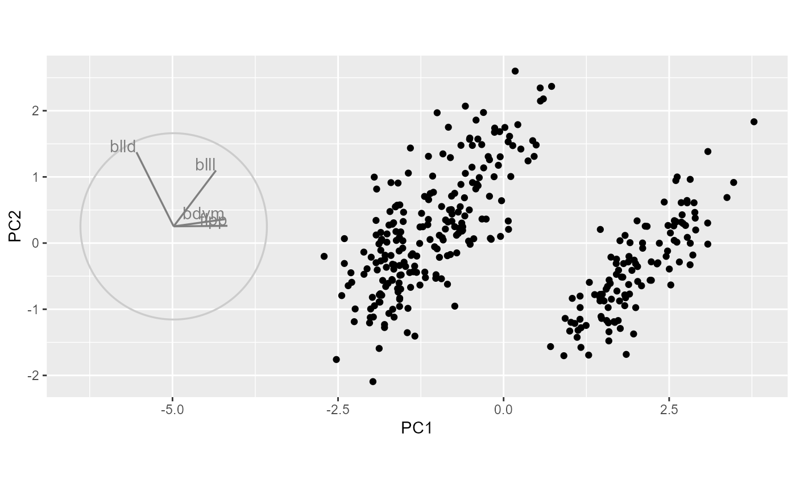
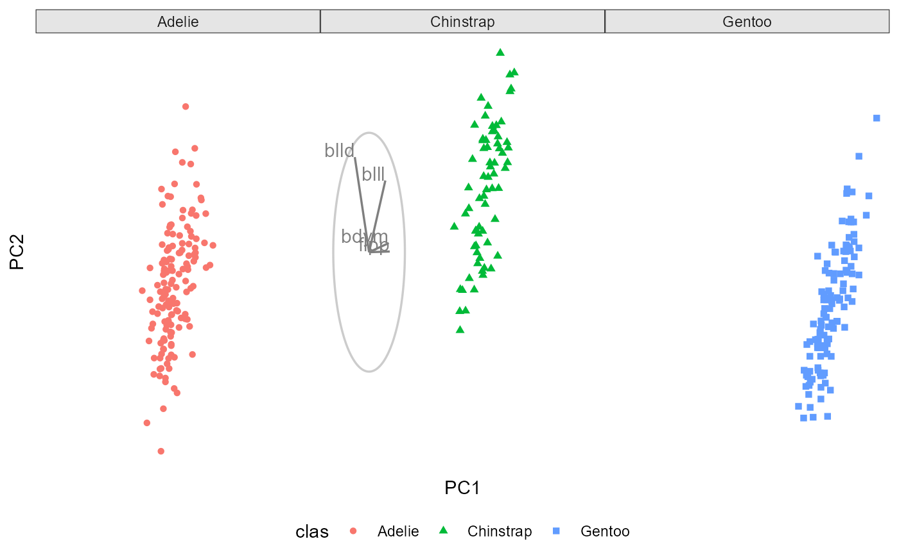

Additively draws a basis on a static ggplot.
Not a geom or proto. Expects
draw_basis(
basis,
map_to = data.frame(x = c(0, 1), y = c(0, 1)),
position = c("left", "center", "right", "bottomleft", "topright", "off"),
manip_col = "blue",
line_size = 0.6,
text_size = 4,
basis_label = abbreviate(gsub("[^[:alnum:]=]", "", rownames(basis), 3L))
)A (p*d) basis to draw. Draws the first two components. If facet is used cbind the facet variable to a specific facet level (2nd example), otherwise the basis prints on all facet levels.
A data.frame to scale the basis to. Defaults to a unitbox; data.frame(x = c(0,1), y = c(0,1)).
The position, to place the basis axes relative to the centered
data. _basis Expects one of c("left", "center", "right", "bottomleft",
"topright", "off"), defaults to "left".
The color to highlight the manipulation variable with. Not applied if the tour isn't a manual tour. Defaults to "blue".
(2D bases only) the thickness of the lines used to make the axes and unit circle. Defaults to 0.6.
Size of the text label of the variables. Defaults to 4.
The text labels of the data variables. Defaults to the 3 character abbreviation of the rownames of the basis.
library(spinifex)
library(ggplot2)
#>
#> Attaching package: 'ggplot2'
#> The following objects are masked from 'package:spinifex':
#>
#> scale_colour_discrete, scale_fill_discrete
dat <- scale_sd(penguins_na.rm[, 1:4])
clas <- penguins_na.rm$species
bas <- basis_pca(dat)
proj <- as.data.frame(dat %*% bas)
ggplot() +
geom_point(aes(PC1, PC2), proj) +
draw_basis(bas, proj, "left") +
coord_fixed()

## Aesthetics and basis on specific facet levels
proj <- cbind(proj, clas = penguins_na.rm$species)
bas <- cbind(as.data.frame(bas), clas = levels(clas)[2])
ggplot() +
facet_wrap(vars(clas)) +
geom_point(aes(PC1, PC2, color = clas, shape = clas), proj) +
draw_basis(bas, proj, "left") +
theme_spinifex()

## To repeat basis in all facet levels don't cbind a facet variable.